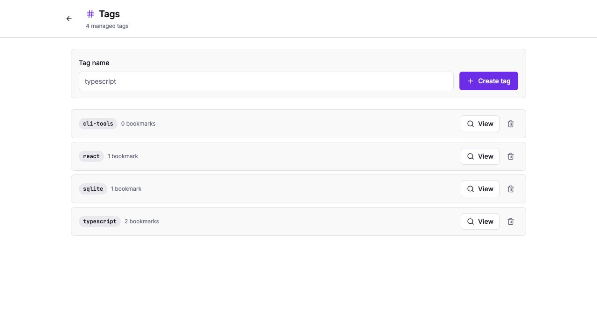
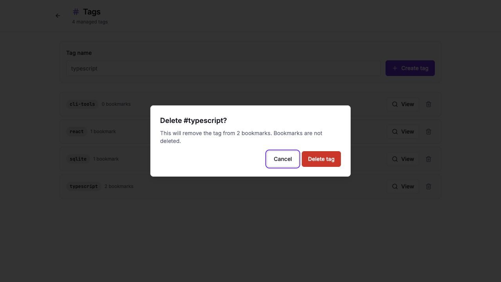
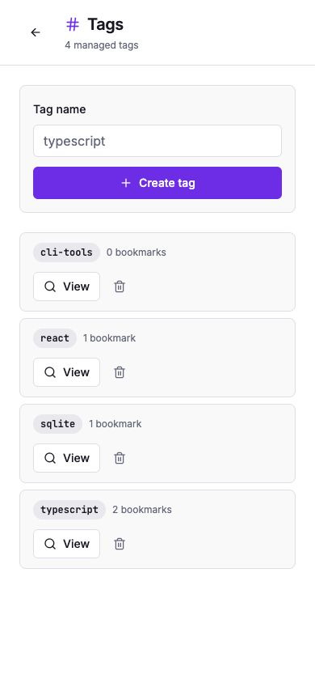
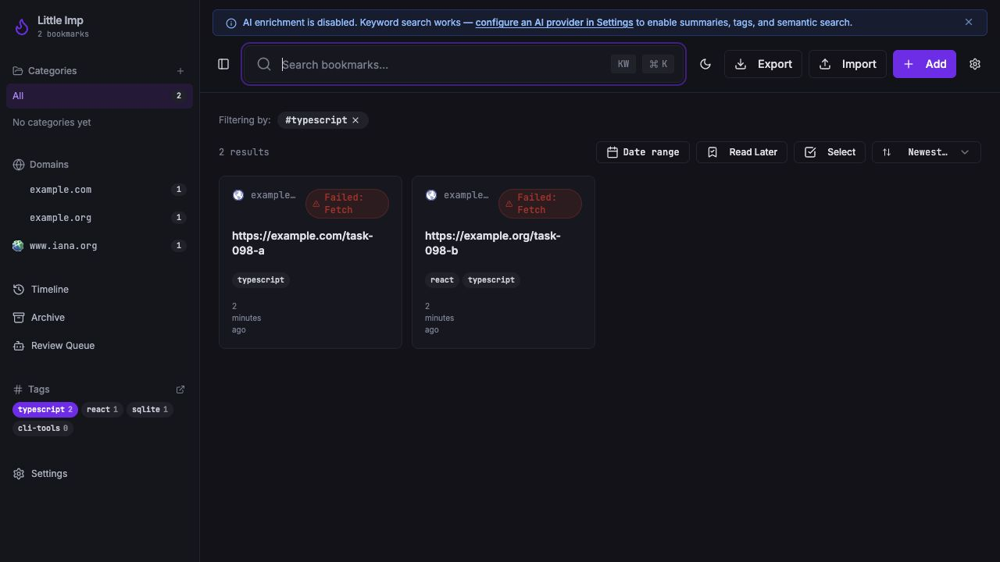

Grimoire Task Report
Tag Management Surface

Before
Tags were only visible in the sidebar and bookmark detail controls. Sidebar counts were derived from the currently loaded bookmark page, so they could miss tags outside the active result set.
Problem
TASK-098 needed a first-class place to list, create, delete, and browse tags without waiting for tag detail pages. Counts also needed to come from the daemon aggregate instead of the visible bookmark page.
Changes Added
- Added typed frontend helpers for
POST /tagsandDELETE /tags/:id. - Changed library sidebar tag counts to use
GET /tagsso counts are page-independent active-library totals. - Added a sidebar manage action that opens the new
/tagsroute. - Added a dedicated tag management page with loading, empty, error, create, delete-confirmation, and count states.
- Linked each tag into browsing flows; TASK-099 later promoted row navigation to stable tag detail pages while keeping the filtered library action available from each detail page.
Result
Management
Users can manage tags outside bookmark detail, with validation and a confirmation step before detaching a tag from active, archived, or trashed bookmarks.
Browsing
Tag browsing now has a stable progression from management to detail pages, with a filtered library action available when users want to search within a tag.
Verification
npx vitest run src/lib/api.test.ts src/hooks/use-bookmarks.test.ts src/components/AppSidebar.test.tsx src/pages/Tags.test.tsxcd daemon && bun test src/test/integration/tags.test.tsnpm run lintnpm run testnpm run type-checknpm run buildnpm run test:e2e- Browser-verified
/tags, delete confirmation, mobile layout, and/?tag=typescriptfiltering against an isolated loopback daemon. - June 2, 2026 closeout reran
npm run test -- src/pages/Tags.test.tsx src/components/AppSidebar.test.tsx src/pages/TagDetail.test.tsx src/lib/api.test.tsandcd daemon && bun test src/test/integration/tags.test.ts; both passed.
Additional Screenshots



#typescript and returns two matching bookmarks.Files Changed
src/pages/Tags.tsxsrc/pages/Tags.test.tsxsrc/lib/api.tssrc/lib/api.test.tssrc/hooks/use-bookmarks.tssrc/hooks/use-bookmarks.test.tssrc/components/AppSidebar.tsxsrc/components/AppSidebar.test.tsxsrc/pages/Index.tsxe2e/business-requirements.spec.tssrc/App.tsxtasks/done/TASK-098-tag-management-surface.md